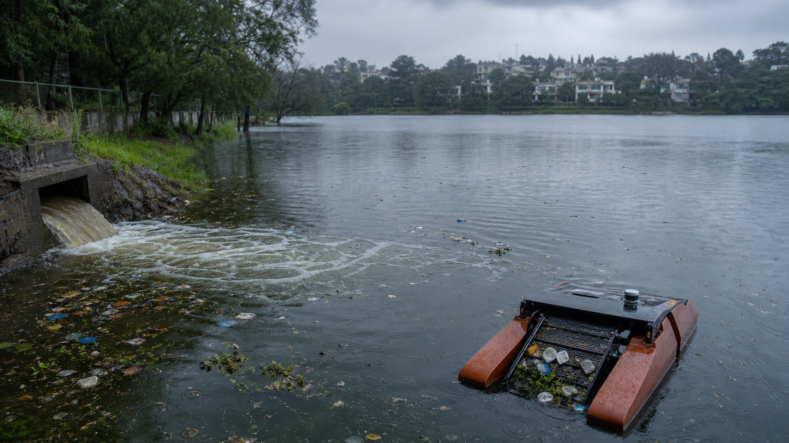

What actually happens to a lake in a Bengaluru monsoon
Every June the same headline runs: lake overflows, city scrambles. We keep acting surprised. Here's the actual physics of a monsoon lake — and what we're building V1, V2 and V4 to catch this season.
01 Aug 20267 min read
A note on the data: we haven't run SCRUB through a full monsoon cycle yet. This piece lays out the limnology and exactly what our sensors are built to measure — the readings themselves are still coming. We'll publish them as a follow-up once we have a season's worth.

Monsoon field conditions — illustrative visual
A lake in monsoon isn't "the same lake, but fuller." For about six weeks a year, it runs on completely different physics — different inflow, different chemistry, different failure modes. Manual cleaning schedules are built for the dry-season lake. The monsoon lake doesn't care.
01The first flush is the worst hour of the year
Before the rain even properly sets in, there's a phase limnologists call the first flush — the first heavy inflow after a long dry spell, which drags months of accumulated street dust, oil residue, and grime off the catchment and straight into the lake in one go. It's rarely the biggest volume of water a lake sees all season. It's reliably the dirtiest.
02Debris doesn't arrive gradually — it steps
Manual desilting contracts — the kind we read through in Issue 02 — are budgeted on a calendar: monthly, sometimes quarterly. But debris in a monsoon lake doesn't move on a calendar. It arrives in pulses, one per significant rain event, dumping a fresh slug of plastic and leaf litter through the stormwater drains inside a single afternoon.
Why it matters: a monthly cleaning schedule against a system that dumps most of its annual debris load in six or seven discrete pulses is like mopping a floor once a month, while the tap runs for ten minutes a day at random times you don't control.
03Oxygen crashes right when the lake looks healthiest
Common intuition says more water means a healthier lake. Monsoon inflow often does the opposite in the short term. Fresh runoff carries organic load — leaves, sewage overflow, catchment residue — and the bacteria breaking that load down consume oxygen faster than it dissolves back in, especially in warm, low-flow inland lakes. The result: a dissolved-oxygen dip in the days right after a big rain event, exactly when the lake looks fullest to the naked eye.
04Sediment doesn't leave. It just moves
A lot of what enters a lake during monsoon never leaves — it settles. Every big inflow event redistributes the lakebed a little, building up near inlets and slowly shrinking a lake's actual water-holding capacity year over year. Encroachment gets most of the blame for shrinking city lakes. Some of it is just decades of unmeasured sediment nobody was watching.
05Why this needs a robot, not a report
None of this is exotic science — first flush, oxygen sag, and pulse-loading have been documented for decades. What's missing in most urban lakes isn't the theory. It's continuous, site-specific measurement. Nobody's logging this lake, in this catchment, through this monsoon, at intervals tight enough to catch a pulse event as it happens.
That's the actual argument for V4 sitting in the water full-time instead of a quarterly water-quality report from a lab van: a monsoon doesn't wait for a sampling schedule, and neither does the damage.
We're instrumenting our next deployment specifically to catch first flush and the pulse pattern described above. Follow-up post, with real numbers, once the rain gives us something to log.